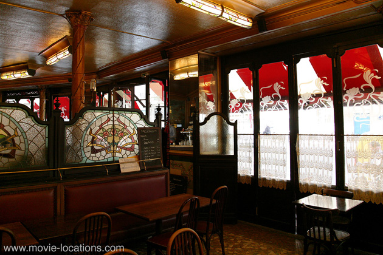
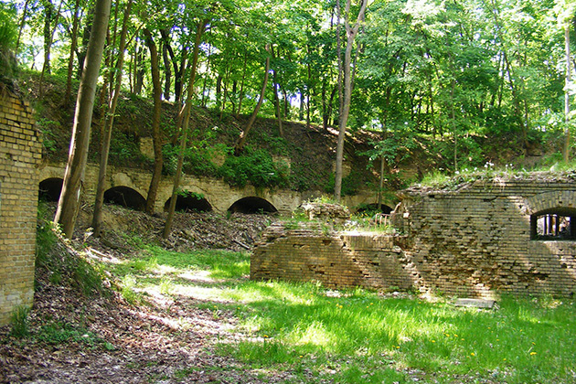

Inglourious Basterds
Main Content

Quentin Tarantino won’t be drawn on the odd title, though I’m sure the quirky spelling was no hindrance when it came to avoiding copyright issues with the 1977 film, Inglorious Bastards.
‘Once upon a time in occupied France’ gives a clue to the film’s take on reality but, let’s be honest, this audacious fantasy of Jewish revenge on the Third Reich is only fractionally more far-fetched than many Hollywood war movies have been.
The director kicks off with his magpie habit of lifting music from other movies (the theme from John Wayne’s 1960 The Alamo in this case), before launching into a series of suspense sequences heightened by the director’s matchless ear for dialogue.
Though set largely in France, most of the movie was filmed in Germany, at the Babelsberg Studios at Potsdam, southwest of Berlin. Built in 1917 as the UFA (Universum Film Aktien Gesellschaft) Studios, the studio really is where Joseph Goebbels shot his notorious propaganda films for the Führer. Yet before being co-opted for such noxious vehicles as the infamous Jud Süss, Babelsberg was home to such classics of the Twenties and Thirties as Nosferatu, The Cabinet of Dr Caligari, Metropolis and The Blue Angel.
So, first the disappointments. You won’t find ‘La Gamaar’, the cinema run by Shosanna (Mélanie Laurent) in Paris, or indeed, anywhere. It was built – both interior and exterior – in the studio.
The design was inspired by two favourite Los Angeles picture palaces you may be familiar with: the Vista Theater, 4473 Sunset Drive, in East Hollywood (seen in the Tarantino-scripted True Romance) and downtown’s lavish Los Angeles Theatre, 615 South Broadway (which has featured in films as diverse as The Artist, Armageddon, Batman Forever, Chaplin, Charlie’s Angels and Christopher Nolan’s The Prestige). And, just to ensure Babelsberg was preserved for future productions, a duplicate cinema interior was built in an abandoned cement factory to film the final explosive conflagration.
‘La Louisiane’, the basement bar where the meeting with film star Bridget von Hammersmark (Diane Kruger) goes horribly wrong, was also no more than a studio set, as was the interior of the LaPadite farmhouse, in which chillingly polite Colonel Hans Landa (Christoph Waltz) interrogates the hapless farmer. The exterior is a cabin overlooking the village of Sebnitz, just a few miles northeast of Bad Schandau down near the Czech border.

Just outside Berlin itself, the wooded ravine with brick arches where Aldo Raine (Brad Pitt) and the Basterds interrogate Nazis before taking scalps, is Fort Hahneberg, Hahnebergweg 50, west of the city (near to Spandau). The partition of Germany meant that the fort, built in 1888 as a defence for the city but never actually used, lay for decades undisturbed in a strip of no-man’s-land. It’s now been opened up and there are regular guided tours (from April to October).
Hitler's office, where the surviving Private Butz recounts the gory details of his encounter with the Basterds, was shot in the Clay Headquarters Compound of the United States Army in Berlin, at the corner of Clayallee and Saargemuender Strasse in the Dahlem district.
Built for the German Air Force in the late Thirties, the complex was taken over after the war to be used as headquarters of the US Military Government for Germany. When the US army finally vacated the compound, it stood empty, occasionally finding use as a film location (Bryan Singer’s Valkyrie, with Tom Cruise, filmed here). It was recently sold and its future is uncertain.
The one genuine Parisian location in the film is the charming little bistro where Shosanna realises that persistent young soldier Fredrick Zoller (Daniel Brühl) is a national hero. It’s Bistrot La Renaissance, 112 Rue Championnet at Rue du Poteau (metro: Jules Joffrin), north of the city in the 18th Arrondissement. The bar had been noticed by Tarantino in Claude Chabrol’s 1984 drama Le Sangue Des Autres (The Blood of Others) and was found to have remained, amazingly, unchanged. It had featured on screen even before that, in Michel Deville’s wonderfully titled 1974 Le Mouton Enragé, with Jean-Louis Trintignant.
The other Parisian’ location, ‘Chez Maurice’, the restaurant to which Shosanna is summoned to a meeting over strudel with Josef Goebbels, however, is back in Berlin, where it’s quite famous in its own right. It’s Cafe Einstein, Kurfürstenstraße 58, the elegant wood-panelled original which spawned a chain of coffee houses in the city.
Stolz der Nation (Nation’s Pride), the propaganda film about Fredrick Zoller being premiered at La Gamaar for the Nazi top brass, was actually filmed as a seven-minute short by Eli Roth (the director of Hostel, who also wields a mean baseball bat as Donny Donowitz, the ‘Bear Jew’). You can catch the full version (with yet another baby-in-runaway-pram homage to Battleship Potemkin – see Brazil or The Untouchables) on the DVD of Inglourious Basterds.
Set in ‘Sicily’, the film-within-a-film was shot on Untermarkt and Obermarkt in the old town of Görlitz, about 40 miles northeast of Bad Schandau, but on the border with Poland.
The unmodernised streets of Görlitz also served as the backdrop to two more WWII dramas – Stephen Daldry’s 2008 The Reader, with Kate Winslet and Ralph Fiennes, and The Book Thief; as well as standing in for ‘Paris’ in the 2004 version of Around The World In 80 Days and for the fictitious country of ‘Zubrowka’ in Wes Anderson’s The Grand Budapest Hotel.
Visit Info
Visit The Film Locations
Germany
Visit: Germany
Visit: Berlin
Flights: Berlin Tegel Airport, Zufahrt zum Flughafen Tegel, 13405 Berlin (tel: +49.30.60911150)
Visit: Studio Babelsberg, August-Bebel-Straße. 26-53, 14482 Potsdam (tel: +49.331.7210000)
Visit: Filmpark Babelsburg, Großbeerenstraße 200, 14482 Potsdam-Babelsberg (+49.331.7212750)
Visit: Cafe Einstein, Kurfürstenstraße 58, 10785 Berlin (tel: +49.30.2615096)
Visit: Fort Hahneberg, Hahnebergweg 50, 13593 Berlin (tel: +49.30.3664605)
Visit: Görlitz
France
Visit: France
Visit: Paris
Flights: Charles De Gaulle International Airport, 95700 Roissy-en-France, France (tel: 33.1.70.36.39.50)
Travel around: Paris Metro
Visit: Bistrot La Renaissance, 112 Rue Championnet, 75018 Paris (tel: 01.46.06.01.76)